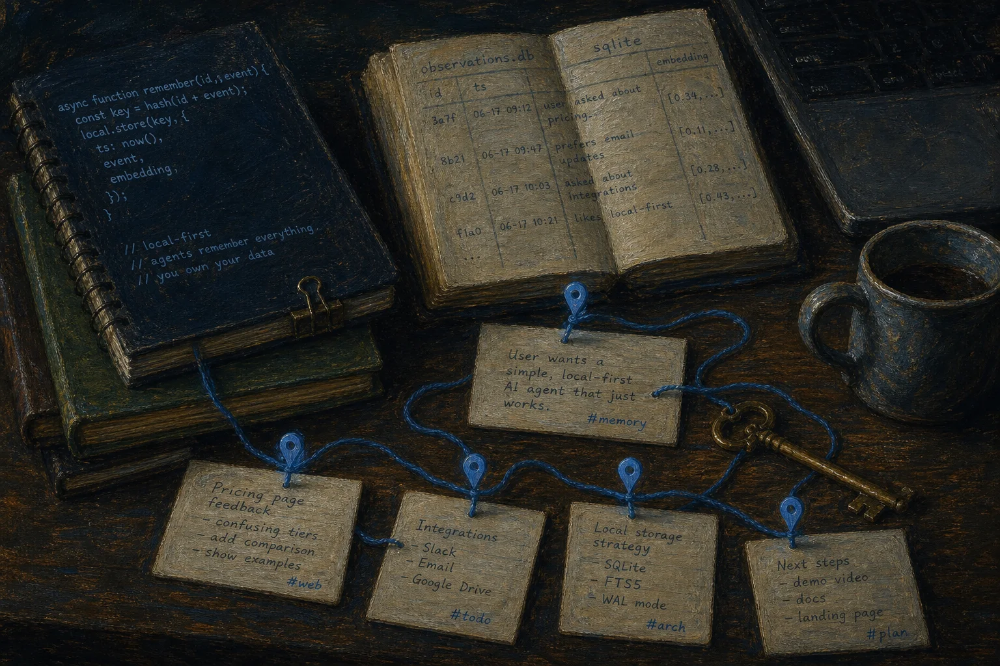
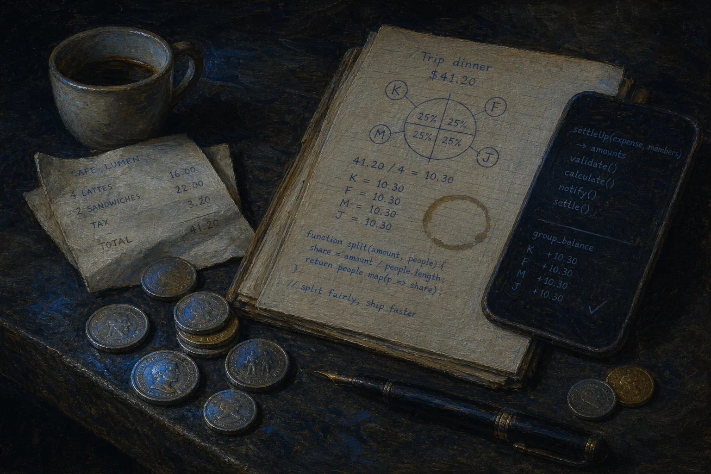
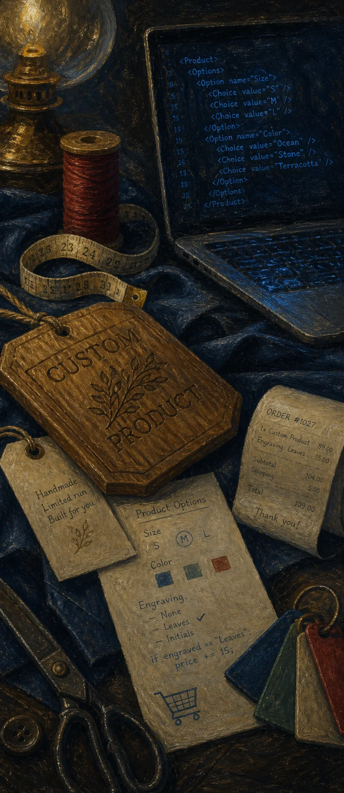
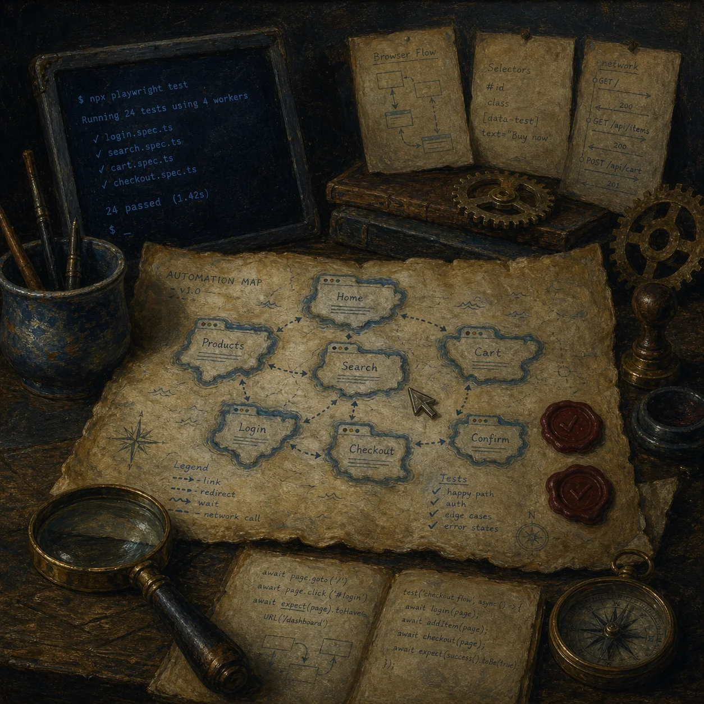

Kunj KARIYA
AI agents, local-first apps, Shopify tools, desktop automation, and developer workflows.
01 / About
I build practical software that connects tools and gets work done.
My work moves between local-first agent memory, commerce workflows, mobile finance, desktop assistants, browser automation, and internal AI systems.
02 / Linked Projects
03 / GitHub
Contributions

04 / Working Style
Simple surfaces first. Real flows before polish.
I like tools that do the job directly: connect the API, make the local state clear, keep the UI small, and test the actual surface people use.
05 / More Builds

06 / Focus
Agents, automation, commerce, and local-first systems.
The thread across the projects is straightforward: make software that can remember context, automate repetitive work, and still feel understandable when something breaks.


07 / Links